Chapter 8. Inferene Engines#
import os
import warnings
import arviz as az
import matplotlib.pyplot as plt
import pandas as pd
import jax.numpy as jnp
from jax import random, local_device_count
import numpyro
import numpyro.distributions as dist
import numpyro.optim as optim
from numpyro.infer import MCMC, NUTS, SVI, Trace_ELBO
from numpyro.infer.autoguide import AutoLaplaceApproximation
seed=1234
if "SVG" in os.environ:
%config InlineBackend.figure_formats = ["svg"]
warnings.formatwarning = lambda message, category, *args, **kwargs: "{}: {}\n".format(
category.__name__, message
)
az.style.use("arviz-darkgrid")
numpyro.set_platform("cpu") # or "gpu", "tpu" depending on system
numpyro.set_host_device_count(local_device_count())
/home/runner/work/bap-numpyro/bap-numpyro/.venv/lib/python3.13/site-packages/tqdm/auto.py:21: TqdmWarning: IProgress not found. Please update jupyter and ipywidgets. See https://ipywidgets.readthedocs.io/en/stable/user_install.html
from .autonotebook import tqdm as notebook_tqdm
# import pymc3 as pm
# import numpy as np
# import pandas as pd
# import scipy.stats as stats
# import matplotlib.pyplot as plt
# import arviz as az
# az.style.use('arviz-darkgrid')
Non-Markovian methods#
Grid computing#
def posterior_grid(grid_points=50, heads=6, tails=9):
"""
A grid implementation for the coin-flipping problem
"""
grid = jnp.linspace(0.01, 1, grid_points)
prior = jnp.repeat(1/grid_points, grid_points) # uniform prior
likelihood = jnp.exp(dist.Binomial(total_count=(heads+tails), probs=grid).log_prob(heads))
posterior = likelihood * prior
posterior /= posterior.sum()
return grid, posterior
Assuming we flip a coin 13 times and we observed 3 head we have:
data = jnp.repeat(jnp.array([0, 1]), jnp.asarray((10, 3)))
points = 10
h = data.sum()
t = len(data) - h
grid, posterior = posterior_grid(points, h, t)
plt.plot(grid, posterior, 'o-')
plt.title(f'heads = {h}, tails = {t}')
plt.yticks([])
plt.xlabel('θ');
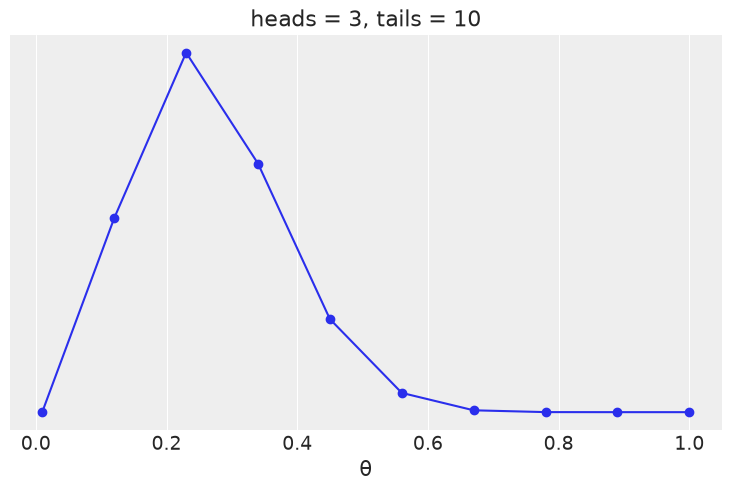
Quadratic method#
def model(obs=None):
p = numpyro.sample('p', dist.Beta(concentration1=1., concentration0=1.))
w = numpyro.sample('w', dist.Binomial(total_count=1, probs=p), obs=obs)
guide = AutoLaplaceApproximation(model)
svi = SVI(model, guide, optim.Adam(1), Trace_ELBO(), obs=data)
svi_result = svi.run(random.PRNGKey(0), 20000)
params = svi_result.params
params
0%| | 0/20000 [00:00<?, ?it/s]
0%| | 1/20000 [00:00<1:37:15, 3.43it/s]
3%|▎ | 682/20000 [00:00<00:08, 2239.79it/s]
7%|▋ | 1362/20000 [00:00<00:05, 3695.27it/s, init loss: 11.0803, avg. loss [1-1000]: 8.7081]
10%|█ | 2024/20000 [00:00<00:03, 4610.76it/s, init loss: 11.0803, avg. loss [1001-2000]: 8.6988]
13%|█▎ | 2692/20000 [00:00<00:03, 5250.14it/s, init loss: 11.0803, avg. loss [1001-2000]: 8.6988]
17%|█▋ | 3358/20000 [00:00<00:02, 5681.05it/s, init loss: 11.0803, avg. loss [2001-3000]: 8.6997]
20%|██ | 4020/20000 [00:00<00:02, 5965.37it/s, init loss: 11.0803, avg. loss [3001-4000]: 8.6997]
23%|██▎ | 4697/20000 [00:00<00:02, 6209.03it/s, init loss: 11.0803, avg. loss [3001-4000]: 8.6997]
27%|██▋ | 5368/20000 [00:01<00:02, 6359.88it/s, init loss: 11.0803, avg. loss [4001-5000]: 8.7000]
30%|███ | 6038/20000 [00:01<00:02, 6461.82it/s, init loss: 11.0803, avg. loss [5001-6000]: 8.7000]
34%|███▎ | 6716/20000 [00:01<00:02, 6555.23it/s, init loss: 11.0803, avg. loss [5001-6000]: 8.7000]
37%|███▋ | 7389/20000 [00:01<00:01, 6606.55it/s, init loss: 11.0803, avg. loss [6001-7000]: 8.6997]
40%|████ | 8063/20000 [00:01<00:01, 6644.14it/s, init loss: 11.0803, avg. loss [7001-8000]: 8.6997]
44%|████▎ | 8742/20000 [00:01<00:01, 6687.48it/s, init loss: 11.0803, avg. loss [7001-8000]: 8.6997]
47%|████▋ | 9415/20000 [00:01<00:01, 6683.03it/s, init loss: 11.0803, avg. loss [8001-9000]: 8.6998]
50%|█████ | 10086/20000 [00:01<00:01, 6689.56it/s, init loss: 11.0803, avg. loss [9001-10000]: 8.7000]
54%|█████▍ | 10765/20000 [00:01<00:01, 6718.44it/s, init loss: 11.0803, avg. loss [9001-10000]: 8.7000]
57%|█████▋ | 11440/20000 [00:01<00:01, 6727.69it/s, init loss: 11.0803, avg. loss [10001-11000]: 8.6999]
61%|██████ | 12115/20000 [00:02<00:01, 6731.62it/s, init loss: 11.0803, avg. loss [11001-12000]: 8.6998]
64%|██████▍ | 12794/20000 [00:02<00:01, 6748.38it/s, init loss: 11.0803, avg. loss [11001-12000]: 8.6998]
67%|██████▋ | 13470/20000 [00:02<00:00, 6738.56it/s, init loss: 11.0803, avg. loss [12001-13000]: 8.7000]
71%|███████ | 14145/20000 [00:02<00:00, 6723.99it/s, init loss: 11.0803, avg. loss [13001-14000]: 8.6997]
74%|███████▍ | 14827/20000 [00:02<00:00, 6751.08it/s, init loss: 11.0803, avg. loss [13001-14000]: 8.6997]
78%|███████▊ | 15503/20000 [00:02<00:00, 6740.96it/s, init loss: 11.0803, avg. loss [14001-15000]: 8.6998]
81%|████████ | 16178/20000 [00:02<00:00, 6711.80it/s, init loss: 11.0803, avg. loss [15001-16000]: 8.7000]
84%|████████▍ | 16855/20000 [00:02<00:00, 6728.79it/s, init loss: 11.0803, avg. loss [15001-16000]: 8.7000]
88%|████████▊ | 17528/20000 [00:02<00:00, 6721.80it/s, init loss: 11.0803, avg. loss [16001-17000]: 8.6999]
91%|█████████ | 18201/20000 [00:02<00:00, 6724.05it/s, init loss: 11.0803, avg. loss [17001-18000]: 8.6998]
94%|█████████▍| 18879/20000 [00:03<00:00, 6738.21it/s, init loss: 11.0803, avg. loss [17001-18000]: 8.6998]
98%|█████████▊| 19553/20000 [00:03<00:00, 6730.97it/s, init loss: 11.0803, avg. loss [18001-19000]: 8.6997]
100%|██████████| 20000/20000 [00:03<00:00, 6123.77it/s, init loss: 11.0803, avg. loss [19001-20000]: 8.6999]
{'auto_loc': Array([-1.0116087], dtype=float32)}
samples = guide.sample_posterior(random.PRNGKey(0), params, sample_shape=(10000,))
xs = jnp.sort(samples['p'])
std_q = jnp.std(xs)
mean_q = jnp.mean(xs)
mean_q, std_q
(Array(0.28066465, dtype=float32), Array(0.11330544, dtype=float32))
# analytical calculation
x = jnp.linspace(0, 1, 100)
plt.plot(x, jnp.exp(dist.Beta(h+1, t+1).log_prob(x)), label='True posterior')
# quadratic approximation
plt.plot(x, jnp.exp(dist.Normal(mean_q, std_q).log_prob(x)),label='Quadratic approximation')
# plt.plot(x, guide.(params).sample(random.PRNGKey(0), sample_shape=(len(x),)))
plt.legend(loc=0, fontsize=13)
plt.title(f'heads = {h}, tails = {t}')
plt.xlabel('θ', fontsize=14)
plt.yticks([])
([], [])
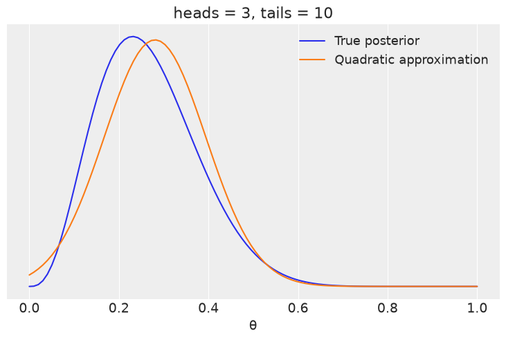
quantiles = guide.quantiles(params, 0.5)
quantiles
{'p': Array(0.26666513, dtype=float32)}
guide.median(params)
{'p': Array(0.26666513, dtype=float32)}
# predictive = Predictive(guide, params=params, num_samples=1000)
# samples = predictive(random.PRNGKey(1), data)
numpyro.diagnostics.hpdi(samples['p'], prob=0.5)
array([0.17062545, 0.32000083], dtype=float32)
# with pm.Model() as normal_aproximation:
# p = pm.Beta('p', 1., 1.)
# w = pm.Binomial('w',n=1, p=p, observed=data)
# mean_q = pm.find_MAP()
# std_q = ((1/pm.find_hessian(mean_q, vars=[p]))**0.5)[0]
# mean_q['p'], std_q
Markovian methods#
Monte Carlo#
N = 10000
x, y = dist.Uniform(low=-1, high=1).sample(random.PRNGKey(0), sample_shape=(2, N))
inside = (x**2 + y**2) <= 1
pi = inside.sum()*4/N
error = abs((pi - jnp.pi) / pi) * 100
outside = jnp.invert(inside)
plt.figure(figsize=(8, 8))
plt.plot(x[inside], y[inside], 'b.')
plt.plot(x[outside], y[outside], 'r.')
plt.plot(0, 0, label=f'π*= {pi:4.3f}\nerror = {error:4.3f}', alpha=0)
plt.axis('square')
plt.xticks([])
plt.yticks([])
plt.legend(loc=1, frameon=True, framealpha=0.9)
<matplotlib.legend.Legend at 0x7f52e0f32d50>
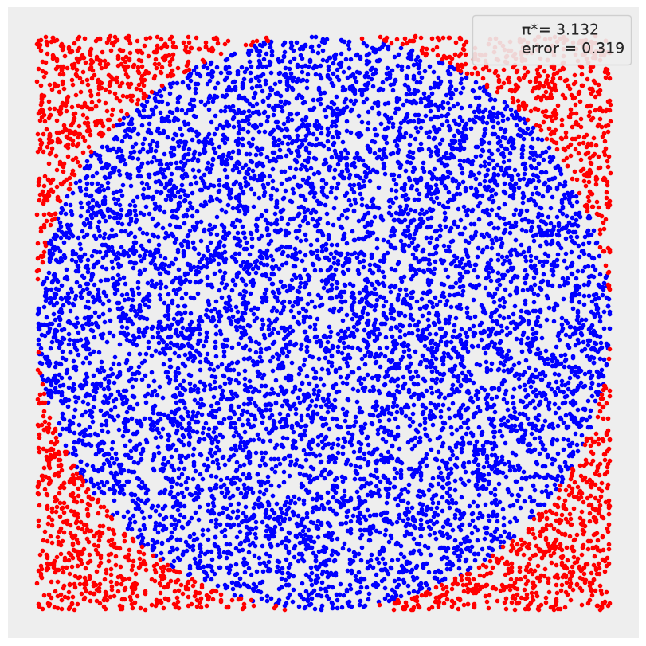
def metropolis(func, draws=10000):
"""A very simple Metropolis implementation"""
trace = jnp.zeros(draws)
old_x = 0.5 # func.mean()
old_prob = jnp.exp(func.log_prob(old_x))
delta = dist.Normal(loc=0, scale=0.5).sample(random.PRNGKey(0), sample_shape=(draws,))
for i in range(draws):
new_x = old_x + delta[i]
new_prob = jnp.exp(func.log_prob(new_x))
acceptance = new_prob / old_prob
# if acceptance >= dist.Uniform(low=0, high=1).sample(random.PRNGKey(i)):
if acceptance >= random.uniform(random.PRNGKey(i)):
trace = trace.at[i].set(new_x)
old_x = new_x
old_prob = new_prob
else:
# x[idx] = y``, use ``x = x.at[idx].set(y)
trace = trace.at[i].set(old_x)
return trace
func = dist.Beta(concentration1=2, concentration0=5)
trace = metropolis(func=func)
x = jnp.linspace(0.01, .99, 100)
y = jnp.exp(func.log_prob(x))
plt.xlim(0, 1)
plt.plot(x, y, 'C1-', lw=3, label='True distribution')
plt.hist(trace[trace > 0], bins=25, density=True, label='Estimated distribution')
plt.xlabel('x')
plt.ylabel('pdf(x)')
plt.yticks([])
plt.legend()
<matplotlib.legend.Legend at 0x7f52aca8fc50>
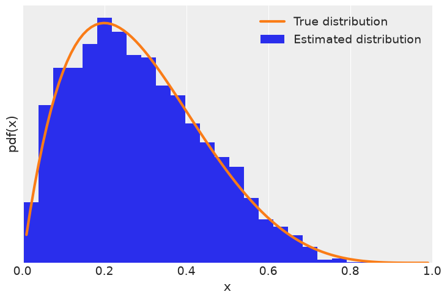
Diagnosing the samples#
def centered_model(obs=None):
a = numpyro.sample('a', dist.HalfNormal(scale=10))
b = numpyro.sample('b', dist.Normal(loc=0, scale=a), sample_shape=(10,))
kernel = NUTS(centered_model, target_accept_prob=0.85)
trace_cm = MCMC(kernel, num_warmup=1000, num_samples=1000, num_chains=2, chain_method='sequential')
trace_cm.run(random.PRNGKey(seed))
def non_centered_model(obs=None):
a = numpyro.sample('a', dist.HalfNormal(scale=10))
b_offset = numpyro.sample('b_offset', dist.Normal(loc=0, scale=1), sample_shape=(10,))
b = numpyro.deterministic('b', 0 + b_offset * a)
kernel = NUTS(non_centered_model, target_accept_prob=0.85)
trace_ncm = MCMC(kernel, num_warmup=1000, num_samples=1000, num_chains=2, chain_method='sequential')
trace_ncm.run(random.PRNGKey(seed))
az.plot_trace(trace_cm, var_names=['a'], divergences='top', compact=False)
array([[<Axes: title={'center': 'a'}>, <Axes: title={'center': 'a'}>]],
dtype=object)
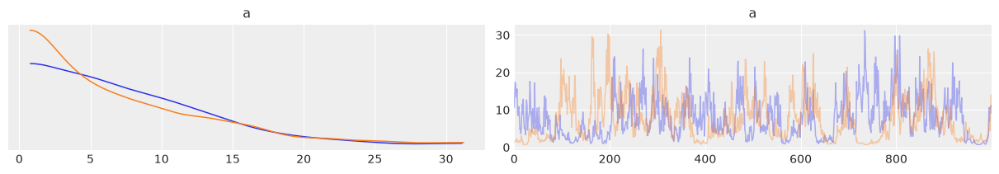
az.plot_trace(trace_ncm, var_names=['a'], compact=False)
array([[<Axes: title={'center': 'a'}>, <Axes: title={'center': 'a'}>]],
dtype=object)
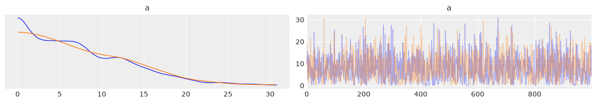
az.summary(trace_cm)
| mean | sd | hdi_3% | hdi_97% | mcse_mean | mcse_sd | ess_bulk | ess_tail | r_hat | |
|---|---|---|---|---|---|---|---|---|---|
| a | 7.708 | 5.766 | 0.722 | 17.747 | 0.635 | 0.266 | 68.0 | 131.0 | 1.01 |
| b[0] | -0.042 | 9.527 | -19.865 | 18.643 | 0.177 | 0.739 | 2825.0 | 756.0 | 1.01 |
| b[1] | -0.119 | 9.625 | -21.878 | 16.957 | 0.195 | 0.650 | 2632.0 | 722.0 | 1.00 |
| b[2] | 0.313 | 9.998 | -20.538 | 19.968 | 0.205 | 0.707 | 2358.0 | 877.0 | 1.00 |
| b[3] | 0.107 | 9.762 | -20.441 | 19.328 | 0.217 | 0.701 | 2307.0 | 548.0 | 1.01 |
| b[4] | -0.137 | 9.505 | -17.815 | 18.481 | 0.186 | 0.827 | 2514.0 | 682.0 | 1.00 |
| b[5] | 0.134 | 9.026 | -17.087 | 19.827 | 0.173 | 0.597 | 2635.0 | 704.0 | 1.00 |
| b[6] | 0.274 | 9.274 | -16.880 | 18.412 | 0.182 | 0.755 | 2679.0 | 896.0 | 1.00 |
| b[7] | -0.476 | 10.020 | -22.704 | 17.753 | 0.201 | 0.734 | 2703.0 | 730.0 | 1.01 |
| b[8] | 0.206 | 9.590 | -18.637 | 19.314 | 0.213 | 0.605 | 2083.0 | 784.0 | 1.00 |
| b[9] | 0.104 | 9.334 | -21.636 | 17.509 | 0.171 | 0.601 | 2783.0 | 881.0 | 1.00 |
az.rhat(trace_cm)['a'].values, az.rhat(trace_ncm)['a'].values
(array(1.00707849), array(1.00040547))
az.plot_forest([trace_cm, trace_ncm], model_names=['centered', 'non_centered'],
var_names=['a'], r_hat=True, ess=True)
array([<Axes: title={'center': '94.0% HDI'}>,
<Axes: title={'center': 'ess'}>, <Axes: title={'center': 'r_hat'}>],
dtype=object)
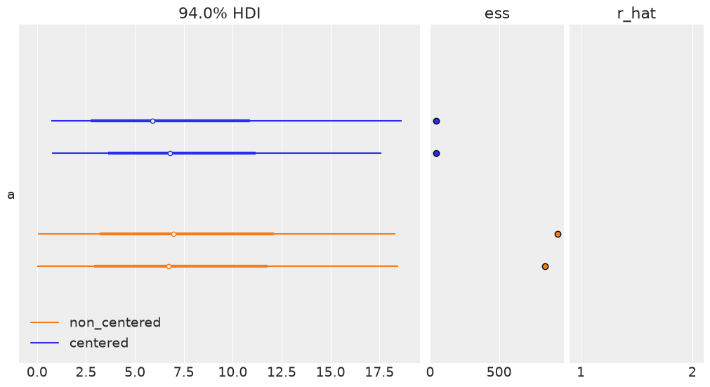
summaries = pd.concat([az.summary(trace_cm, var_names=['a']),
az.summary(trace_ncm, var_names=['a'])])
summaries.index = ['centered', 'non_centered']
summaries
| mean | sd | hdi_3% | hdi_97% | mcse_mean | mcse_sd | ess_bulk | ess_tail | r_hat | |
|---|---|---|---|---|---|---|---|---|---|
| centered | 7.708 | 5.766 | 0.722 | 17.747 | 0.635 | 0.266 | 68.0 | 131.0 | 1.01 |
| non_centered | 7.938 | 5.989 | 0.000 | 18.466 | 0.142 | 0.115 | 1130.0 | 773.0 | 1.00 |
az.plot_autocorr(trace_cm, var_names=['a'])
array([<Axes: title={'center': 'a\n0'}>, <Axes: title={'center': 'a\n1'}>],
dtype=object)
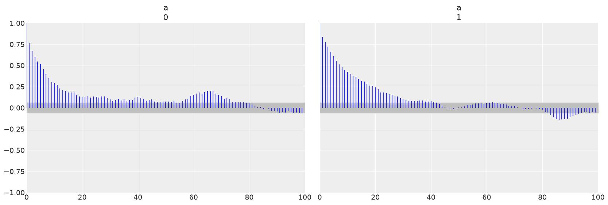
az.plot_autocorr(trace_ncm, var_names=['a'])
array([<Axes: title={'center': 'a\n0'}>, <Axes: title={'center': 'a\n1'}>],
dtype=object)
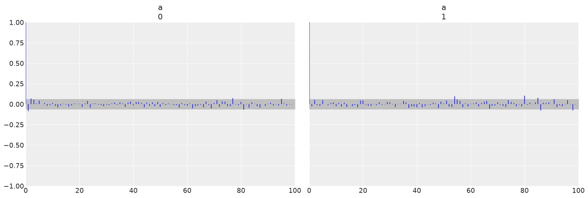
Effective sample size#
az.ess(trace_cm)['a'].values
array(68.46694905)
Divergences#
_, ax = plt.subplots(1, 2, sharey=True, sharex=True, figsize=(10, 5), constrained_layout=True)
for idx, tr in enumerate([trace_cm, trace_ncm]):
az.plot_pair(tr, var_names=['b', 'a'], coords={'b_dim_0':[0]}, kind='scatter',
divergences=True, divergences_kwargs={'color':'C1'},
ax=ax[idx])
ax[idx].set_title(['centered', 'non-centered'][idx])
UserWarning: Divergences data not found, plotting without divergences. Make sure the sample method provides divergences data and that it is present in the `diverging` field of `sample_stats` or `sample_stats_prior` or set divergences=False
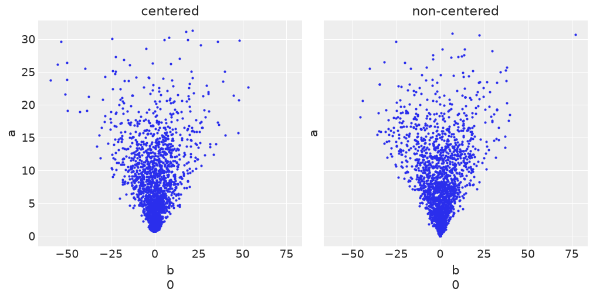
az.plot_parallel(trace_cm)
<Axes: >
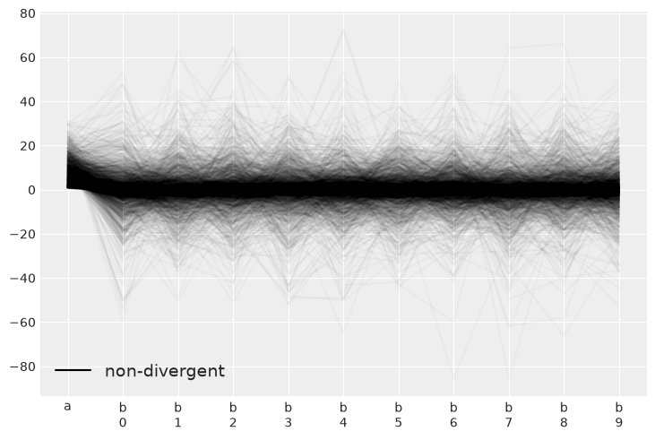